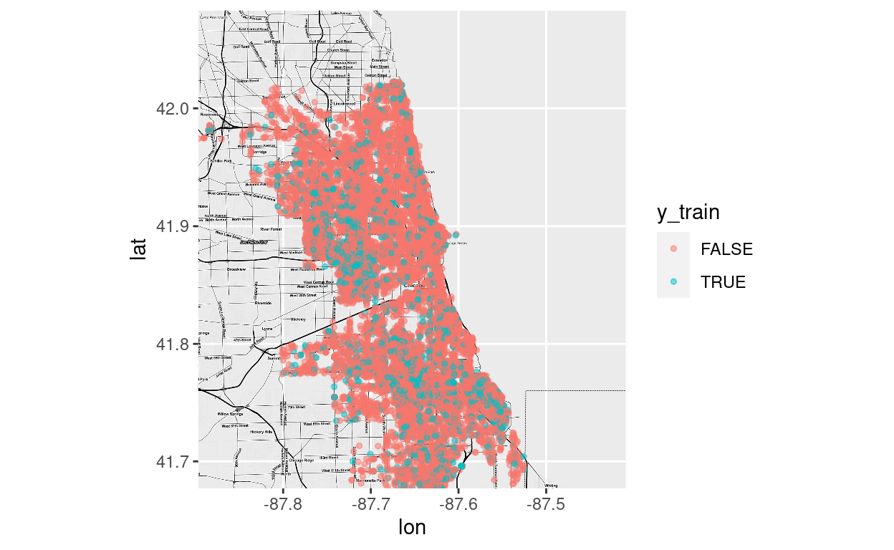
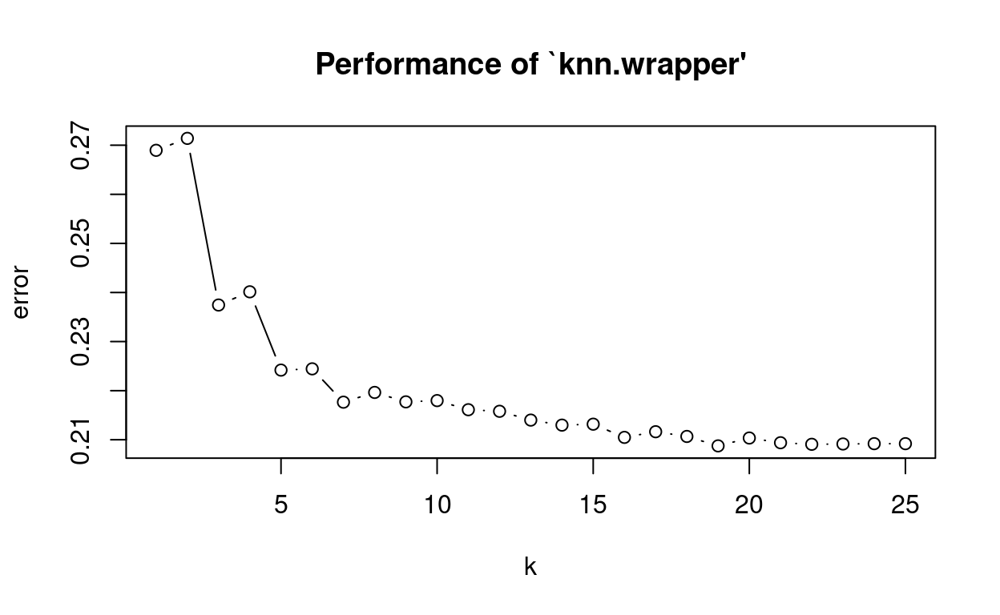
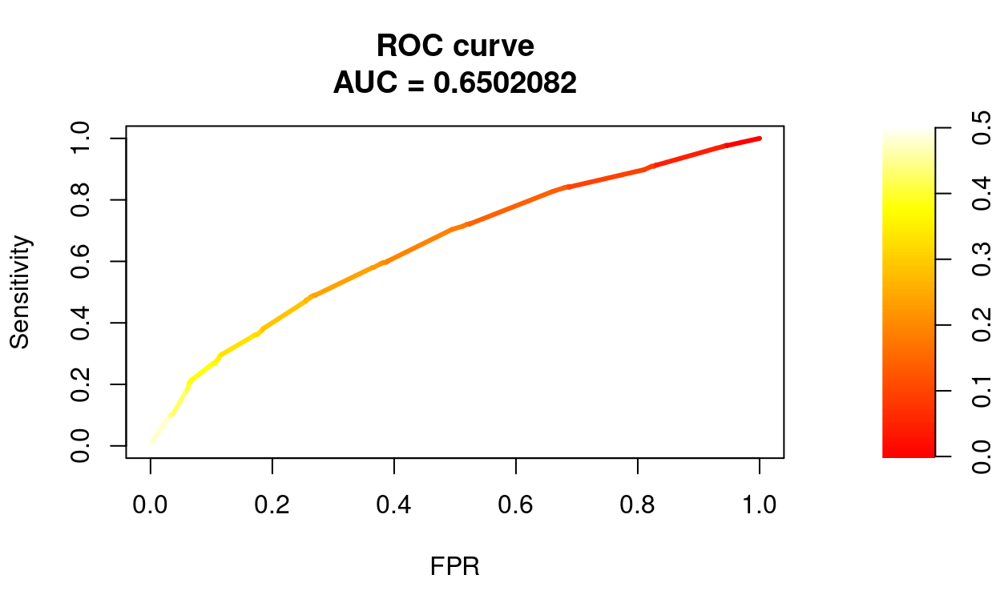
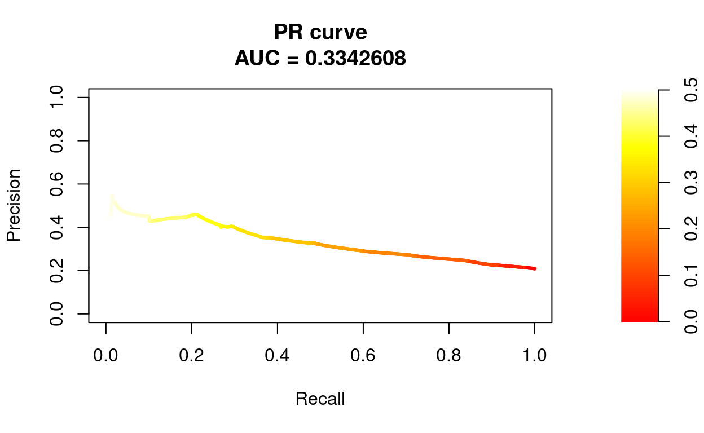

Setup
# devtools::install_github("dkahle/ggmap")
library(learnr)
library(RSocrata)
library(ggplot2)
library(ggmap)
library(e1071)
library(class)
library(caret)
library(PRROC)
library(pROC)Data
For this notebook we use data on incidents of crime in the City of Chicago. This data “… is extracted from the Chicago Police Department’s CLEAR (Citizen Law Enforcement Analysis and Reporting) system.” It contains a number of basic information about each crime incident, such as date, location, type and whether there was an arrest. Here we only pull in data from January 2018.
Source: https://data.cityofchicago.org/Public-Safety/Crimes-2001-to-present/ijzp-q8t2
ccj2018 <- read.socrata("https://data.cityofchicago.org/resource/6zsd-86xi.json?$where=date between '2018-01-01' and '2018-01-31'")
#str(ccj2018)
head(ccj2018)names(ccj2018)## [1] "id" "case_number" "date"
## [4] "block" "iucr" "primary_type"
## [7] "description" "location_description" "arrest"
## [10] "domestic" "beat" "district"
## [13] "ward" "community_area" "fbi_code"
## [16] "x_coordinate" "y_coordinate" "year"
## [19] "updated_on" "latitude" "longitude"
## [22] "location.type" "location.coordinates" "location_address"
## [25] "location_city" "location_state" "location_zip"Some quick data preparation since most variables seem to be of type
character by default. We also exclude cases with missing
values.
ccj2018$arrest <- as.factor(ccj2018$arrest)
ccj2018$latitude <- as.numeric(ccj2018$latitude)
ccj2018$longitude <- as.numeric(ccj2018$longitude)
ccj2018 <- subset(ccj2018, complete.cases(ccj2018[,c(9,20,21)]))Train and test set
Next, we split the data into a train and test set.
set.seed(765)
train <- sample(1:nrow(ccj2018), 0.8*nrow(ccj2018))
c_train <- ccj2018[train,]
c_test <- ccj2018[-train,]In addition, we also need X and y data frames for both data pieces as
input for knn(). In the next sections, the outcome will be
arrest and we use (only) latitude and
longitude as features.
X_train <- ccj2018[train,c(20,21)]
X_test <- ccj2018[-train,c(20,21)]
y_train <- ccj2018[train,9]
y_test <- ccj2018[-train,9]A quick look at our outcome variable.
summary(y_train)## FALSE TRUE
## 12399 3224summary(y_test)## FALSE TRUE
## 3064 842As a nice illustration of our prediction problem, we can use
qmap() to build a map of Chicago and then plot the crime
incidents colored by arrest on top.
bbox <- c(left = -87.896805, bottom = 41.677015, right = -87.409286, top = 42.082936)
map <- get_stamenmap(bbox = bbox, zoom = 12, maptype = "toner-hybrid")
map <- ggmap(map)map +
geom_point(data = X_train, aes(x = longitude, y = latitude, color = y_train), size = 1, alpha = 0.5) ## Warning: Removed 319 rows containing missing values (`geom_point()`).
kNN
In order to find a useful kNN setup, we tune k using 10-Fold
Cross-Validation. This can be done e.g. with
tune.knn().
set.seed(761)
tune <- tune.knn(X_train, y_train, k = 1:25, tunecontrol = tune.control(sampling = "cross"), cross = 10)
summary(tune)##
## Parameter tuning of 'knn.wrapper':
##
## - sampling method: 10-fold cross validation
##
## - best parameters:
## k
## 25
##
## - best performance: 0.2051468
##
## - Detailed performance results:
## k error dispersion
## 1 1 0.2641616 0.011994183
## 2 2 0.2681298 0.009426605
## 3 3 0.2374695 0.014023359
## 4 4 0.2370224 0.010173487
## 5 5 0.2232604 0.010396959
## 6 6 0.2217882 0.011615385
## 7 7 0.2155155 0.011640500
## 8 8 0.2184597 0.010610459
## 9 9 0.2135310 0.008787743
## 10 10 0.2149392 0.009934412
## 11 11 0.2129557 0.008030353
## 12 12 0.2107796 0.009315742
## 13 13 0.2105875 0.009347032
## 14 14 0.2092428 0.007469328
## 15 15 0.2071306 0.011317735
## 16 16 0.2085388 0.011766145
## 17 17 0.2066827 0.009998485
## 18 18 0.2071312 0.009747645
## 19 19 0.2057869 0.009012033
## 20 20 0.2059789 0.008260639
## 21 21 0.2059788 0.009442154
## 22 22 0.2062991 0.011720610
## 23 23 0.2064909 0.010735209
## 24 24 0.2064270 0.010059529
## 25 25 0.2051468 0.010548216plot(tune)
Seems like k = 21 is a good choice. We pass this
information to knn(), together with X from the test data.
Note that the resulting object are the test set predictions, since with
kNN there is no separate model to be stored.
y_knn <- knn(X_train, X_test, y_train, k = 21, prob = TRUE)We can also add a logistic regression model for comparison, although this is unlikely to perform well given the prediction task at hand.
logit <- glm(arrest ~ latitude + longitude, data = c_train, family = binomial)
summary(logit)##
## Call:
## glm(formula = arrest ~ latitude + longitude, family = binomial,
## data = c_train)
##
## Deviance Residuals:
## Min 1Q Median 3Q Max
## -0.8861 -0.7084 -0.6492 -0.5775 2.0094
##
## Coefficients:
## Estimate Std. Error z value Pr(>|z|)
## (Intercept) -156.7823 29.4428 -5.325 1.01e-07 ***
## latitude -2.8722 0.2753 -10.434 < 2e-16 ***
## longitude -3.1437 0.3885 -8.091 5.92e-16 ***
## ---
## Signif. codes: 0 '***' 0.001 '**' 0.01 '*' 0.05 '.' 0.1 ' ' 1
##
## (Dispersion parameter for binomial family taken to be 1)
##
## Null deviance: 15907 on 15622 degrees of freedom
## Residual deviance: 15789 on 15620 degrees of freedom
## AIC: 15795
##
## Number of Fisher Scoring iterations: 4Given the logit object, we can generate predicted risk
scores for the test set and transform those into predicted classes. Note
that we are using an arbitrary classification threshold (0.5), which
might not be the best option.
yp_logit <- predict(logit, newdata = c_test, type = "response")
y_logit <- as.factor(ifelse(yp_logit > 0.5, "TRUE", "FALSE"))Prediction performance
Now we can inspect the prediction performance of kNN and the logit
model using confusionMatrix() from caret,
which can be used to (also) display a lot of performance measures, given
predicted classes.
confusionMatrix(y_knn, y_test, mode = "everything", positive = "TRUE")## Confusion Matrix and Statistics
##
## Reference
## Prediction FALSE TRUE
## FALSE 2952 720
## TRUE 112 122
##
## Accuracy : 0.787
## 95% CI : (0.7738, 0.7997)
## No Information Rate : 0.7844
## P-Value [Acc > NIR] : 0.357
##
## Kappa : 0.1468
##
## Mcnemar's Test P-Value : <2e-16
##
## Sensitivity : 0.14489
## Specificity : 0.96345
## Pos Pred Value : 0.52137
## Neg Pred Value : 0.80392
## Precision : 0.52137
## Recall : 0.14489
## F1 : 0.22677
## Prevalence : 0.21557
## Detection Rate : 0.03123
## Detection Prevalence : 0.05991
## Balanced Accuracy : 0.55417
##
## 'Positive' Class : TRUE
## confusionMatrix(y_logit, y_test, mode = "everything", positive = "TRUE")## Warning in confusionMatrix.default(y_logit, y_test, mode = "everything", :
## Levels are not in the same order for reference and data. Refactoring data to
## match.## Confusion Matrix and Statistics
##
## Reference
## Prediction FALSE TRUE
## FALSE 3064 842
## TRUE 0 0
##
## Accuracy : 0.7844
## 95% CI : (0.7712, 0.7972)
## No Information Rate : 0.7844
## P-Value [Acc > NIR] : 0.5092
##
## Kappa : 0
##
## Mcnemar's Test P-Value : <2e-16
##
## Sensitivity : 0.0000
## Specificity : 1.0000
## Pos Pred Value : NaN
## Neg Pred Value : 0.7844
## Precision : NA
## Recall : 0.0000
## F1 : NA
## Prevalence : 0.2156
## Detection Rate : 0.0000
## Detection Prevalence : 0.0000
## Balanced Accuracy : 0.5000
##
## 'Positive' Class : TRUE
## Additionally, ROC and PR curves are helpful for evaluating prediction
performance with categorical outcomes. Here we could (e.g.) use the
PRROC package. As an example, we only consider the knn
model.
First, get predicted risk scores.
yp_knn <- 1 - attributes(y_knn)$probThen, create helper objects…
pc <- yp_knn[y_test == "TRUE"]
nc <- yp_knn[y_test == "FALSE"]…that can be passed to roc.curve() (see
?roc.curve).
roc <- roc.curve(scores.class0 = pc, scores.class1 = nc, curve = T)Finally, we can print and plot the resulting roc object.
roc##
## ROC curve
##
## Area under curve:
## 0.6542363
##
## Curve for scores from 0 to 0.5
## ( can be plotted with plot(x) )plot(roc, scale.color = heat.colors(100))
Same for PR curve.
pr <- pr.curve(scores.class0 = pc, scores.class1 = nc, curve = T)
pr##
## Precision-recall curve
##
## Area under curve (Integral):
## 0.3328453
##
## Area under curve (Davis & Goadrich):
## 0.3328444
##
## Curve for scores from 0 to 0.5
## ( can be plotted with plot(x) )plot(pr, scale.color = heat.colors(100))
Try to calculate precision at top 100, i.e. the expected precision
when classifying the 100 test incidents with the highest risk scores as
being arrests (TRUE). For this, we need to create a new
prediction vector. The function order() might be helpful
here.
yp <- data.frame(yp_knn, y_test)
yp <- yp[order(-yp_knn),]
yp$yt_knn <- "FALSE"
yp[1:100,]$yt_knn <- "TRUE"Next, compute the precision given the new predicted classes and
y_test.
precision(as.factor(yp$yt_knn), yp$y_test, relevant = "TRUE")## [1] 0.38Classification thresholds
In the previous plots, we have seen that performance measures such as
sensitivity and specificity are highly dependent on the underlying
classification threshold. Therefore, lets try to find a threshold that
satisfies some optimality criterion, instead of simply using 0.5. For
this purpose, we have to create another roc object for the knn result,
now using the pROC package.
roc2 <- roc(y_test, yp_knn)## Setting levels: control = FALSE, case = TRUE## Setting direction: controls < casesroc2##
## Call:
## roc.default(response = y_test, predictor = yp_knn)
##
## Data: yp_knn in 3064 controls (y_test FALSE) < 842 cases (y_test TRUE).
## Area under the curve: 0.6542This package provides the function coords(), which can
be used for threshold optimization (see ?coords). Note that
in an actual application, we couldn’t use the test set for this purpose,
so another hold-out set would be needed.
knn_t <- coords(roc2, x = "best", best.method = "closest.topleft", best.weights = c(1, 0.2))
knn_tWe can now use this new threshold to predict class membership.
y_knn2 <- as.factor(ifelse(yp_knn > unlist(knn_t[1]), "TRUE", "FALSE"))And finally build a confusion matrix using the predicted classes from above.
confusionMatrix(y_knn2, y_test, mode = "everything", positive = "TRUE")## Confusion Matrix and Statistics
##
## Reference
## Prediction FALSE TRUE
## FALSE 2564 536
## TRUE 500 306
##
## Accuracy : 0.7348
## 95% CI : (0.7206, 0.7486)
## No Information Rate : 0.7844
## P-Value [Acc > NIR] : 1.0000
##
## Kappa : 0.2034
##
## Mcnemar's Test P-Value : 0.2769
##
## Sensitivity : 0.36342
## Specificity : 0.83681
## Pos Pred Value : 0.37965
## Neg Pred Value : 0.82710
## Precision : 0.37965
## Recall : 0.36342
## F1 : 0.37136
## Prevalence : 0.21557
## Detection Rate : 0.07834
## Detection Prevalence : 0.20635
## Balanced Accuracy : 0.60012
##
## 'Positive' Class : TRUE
##